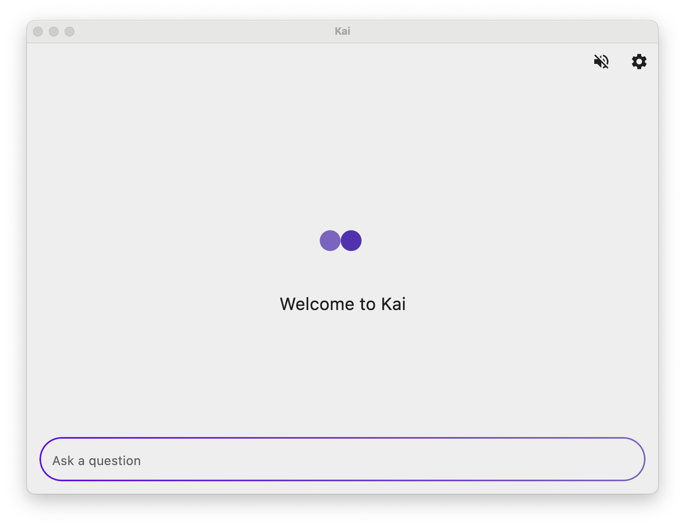
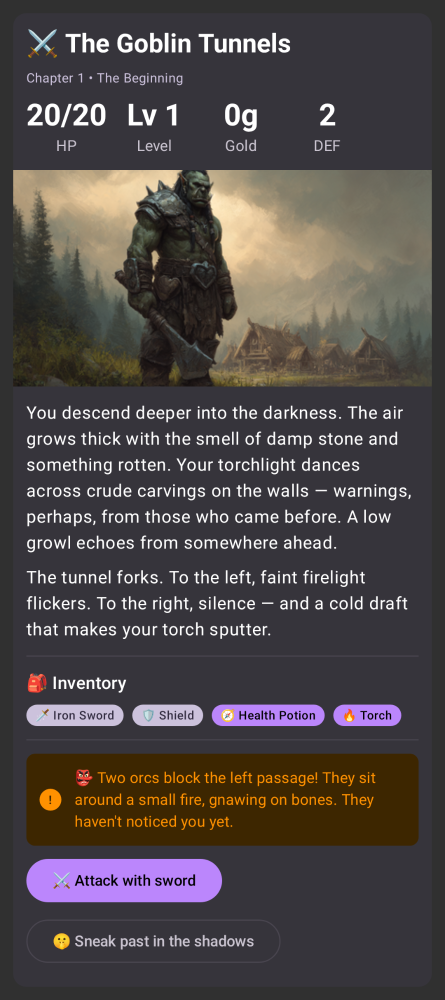

Kai 里藏得最深的五个功能，用了半年才摸到
以为它只是个多模型聊天客户端？其实本地模型零配置接入、心跳型定时任务、记忆自动晋升、动态界面和记忆数据自备份这五个冷门能力，能把它从"又一个AI助手"变成你的个人自动化底座。
你以为 Kai 就是个能同时接几家大模型的聊天框？去它的官网扫一眼功能列表就知道了——装上免费档就能聊、配好服务顺序自动回退，这些才只是表面。我把它翻了个底朝天，发现藏得真深的地方全在「进阶」和「设置」的边角里，官方文档都没给它们单独列章节。

藏在服务页的本地模型零配置接入
我之前一直用手机上的端侧模型，性能受限就不说了，大一点的模型根本装不下。后来偶然翻服务设置，发现有个「OpenAI 兼容接口」选项，点进去才懂——电脑上跑的 Ollama 或 LM Studio，手机端可以直接接。
步骤说起来简单得像广告，但细节才是重点。接口地址默认就是本机 11434 端口的 v1 路径，你要做的只是把本机换成电脑的局域网 IP。有两个坑踩过才知道：
一是地址必须带版本段，以 /v1 结尾才是正确格式，应用会在后面自动拼接对话和模型列表的子路径。我第一次手滑粘了个完整的 chat/completions 端点进去，结果应用自动裁回了前缀——这个容错做得真贴心，但也让我后来才发现自己的地址多粘了东西。
二是安卓 17 以上会额外申请「本地网络」权限。我第一次拒绝了，状态栏就一直飘着「本地网络访问被拒」，还以为是电脑端没开服务。授权之后自动重连，啥都不用改。
这个功能真正好用的场景是：你在电脑上开着 Ollama 跑 Llama3，手机上 Kai 直接走局域网调用，电脑算力、手机界面，模型还不占手机存储。零密钥、零成本，隐私也不会出家门。不想依赖电脑的时候，下载装好的客户端里自带的端侧模型（LiteRT）也能装专门打包的模型，完全离线，只是模型体积受限。
心跳触发的任务不是定时任务
定时任务这个功能听起来不稀奇——到点提醒我交周报、每周一汇总邮件，这些别的 AI 助手也有。但 Kai 有第三种触发方式叫「心跳型」，翻了Kai文档才懂官方文档里只一句话带过的东西有多好用，我用了三个月才真正摸透它的潜力。
普通定时任务（TIME）是到点执行一次然后标记完成，周期任务（CRON）按 cron 表达式循环。心跳型不一样——它不是「到点跑」，而是每轮心跳都跑。Kai 默认每 30 分钟一轮心跳，你把心跳型任务加进去，它的提示词会被追加进每轮心跳的自检清单里。
这有什么好？常规的 cron 表达式写不出来「每 30 分钟检查一次但只在工作时间」这种组合，但心跳型任务可以在提示词里自己加条件判断——AI 会读懂你的自然语言条件，在每轮心跳里先判断要不要执行，要执行才动手。
我现在用它做网站监控：「检查我的某个服务能不能访问，挂了就报告，正常就别打扰我」。提示词里条件写清楚了，AI 就每轮心跳顺带做一遍。比 cron 灵活多了，而且执行结果直接写回任务日志，十条历史都能看，失败了自动退避重试，不会每 30 分钟硬撞一次。
有个小细节：调度器是全局总开关，关掉之后所有任务和心跳一起停。想暂停自动化又不想删任务，直接掰这个开关就行，比一条条取消方便。
记忆能晋升成永久人格
记忆功能大家都知道——跟 AI 说「我咖啡不加糖」，下次它就记住了。但 Kai 有个「晋升」机制，我是在清理旧记忆的时候发现的入口：设置 → Agent → 记忆，点开一条记忆的编辑抽屉，底部有个晋升按钮。
晋升之后这条记忆会变成「永久人格」，跟普通记忆的区别在于：普通记忆可能被新信息覆盖或清理，晋升的人格项权重更高，跨会话永远生效，而且不会出现在普通记忆列表里干扰你清理。
什么样的记忆值得晋升？我整理了几条：长期偏好（比如语言习惯、时区）、项目的不变规则（比如某个技术栈的固定选型）、或者你发现 AI 老是忘记但你又懒得每次重说的事实。晋升入口藏得深，不是在对话里触发的，必须进设置页手动操作——这大概是官方故意设计的，怕 AI 自作主张把什么都晋升了。
记忆的管理还有个有趣的保险：数据损坏时（比如跨版本结构变更），应用会先把原始数据备份到独立键位再重建，唯一副本不会被下一次写入覆盖。而且备份件不随设置导出，只在本机，属于纯兜底。我是之前跨版本升级踩过记忆错乱的坑，才发现这个备份机制救了我一次。
动态界面不是说说而已
很多 AI 助手说支持「结构化输出」，结果就是把 JSON 渲染成卡片。Kai 的动态界面不一样——AI 的回答可以是一个整屏的可交互界面，表单、按钮、多步流程，真的能点。
我第一次碰到是让 AI 帮我规划一次户外生存路线，它直接返回了一个交互式的 survival 模拟器界面，可以选地形、补给、天数，点下一步会根据你的选择动态生成后续场景。不是文字描述，是真的有 UI 组件。

这个能力的入口不在任何设置里，是 AI 根据对话内容自主决定要不要用。你没法强制它出界面，但可以在提示词里引导：用表单收集信息、用多步流程引导操作、用可视化展示结果。
真正好用的场景是：需要让你做选择的地方。比如让 AI 帮你整理本周会议记录，它可以先出一个表单让你勾选哪些条目要重点跟进，勾完再给你生成整理稿——比纯文本来回确认效率高太多。
回退链里本地模型永远不当兜底
最后说一个反直觉的设计。Kai 支持多服务回退链，某个服务挂了自动顺延到下一个。但本地模型（不管是 Ollama 接入的还是端侧 LiteRT 的）永远不会被选为回退目标——就算你把它排在最后一个，前面的全挂了，它也不会顶上。
官方文档里提了一句，但没解释为什么。我猜是故意的：本地服务的稳定性取决于你的电脑开不开机、手机电够不够，把它当兜底等于让聊天在关键时刻依赖一个最不稳定的环节。所以正确的用法是把本地模型当主力（隐私好、零成本），但只配云端服务当下家，让回退链真正能「兜底」。
这个设计我踩过一次坑：之前排了「本地 Ollama → 云端免费档」，以为云端挂了 Ollama 会顶上，结果反过来了。本地挂了云端能顶上，但云端挂了本地不会动。改成「云端 A → 云端 B → 本地 Ollama」才对——主力和兜底的位置换一下思路就通了。
这五个功能，没有一个是在首页大张旗鼓宣传的。本地模型接收入口藏在服务设置的最底部，心跳型任务跟普通定时任务挤在同一个列表，记忆晋升按钮在编辑抽屉的角落里，动态界面完全靠 AI 自觉，回退链的规则反常识到会让你踩坑。
Kai 的好用之处就在于：表面是个「多模型聊天框」，但翻到底层全是给折腾党留的入口。把它用透，不是靠装更多模型，而是把这些边角的隐藏能力串起来——本地模型当主力、心跳型任务做自动化、记忆晋升固化人格、动态界面当交互层、回退链真能兜底。
就像那个记忆自备份机制，安静地待在那里，你不踩坑永远不知道它在保护你。
开源项目最怕单一源访问挂掉，我把这套资料在 GitHub、Gitee、GitCode 三处都同步了一份，墙内墙外的朋友各走各的路。